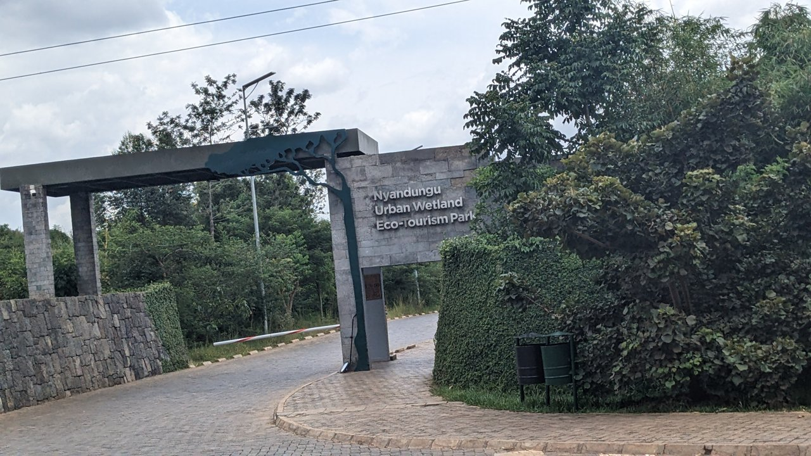

CASE 96 / ルワンダ / キガリ
Nyandungu Eco-Park
キガリ・ニャンドゥング・エコパーク
湿地の再生を、洪水対策・生物多様性・日常利用と持続的な公園管理へどう接続するか。
劣化した都市湿地を再生し、教育・散策・観光に開く事業。環境行政と気候資金が整備を支え、開園時には政府と専門運営会社の合意で日常管理を引き継いだ。公園施設の整備、湿地機能の回復、経済的な持続性を別の評価対象として扱う。
都市・地域の実証 · 調査確認日 2026.10.02

実際の施設・地区
PHOTO: Fikiri-jenly · 掲載元 ↗ · CC0 1.0 ↗写真の詳細
Nyandungu Eco Park入口の現地写真（2025年）。公園の供用状況を示し、生態系回復の因果効果や全域の状態を証明するものではない。
Nyandungu Entry.jpg · 2025-01-17 · 縦横比を維持して最大1280pxに縮小しJPEGを再圧縮。切り抜き・色変更なし。
- LOCATION / 所在地
- ルワンダ・キガリ
Nyandungu湿地公園の代表位置。約121haの事業区域であり、キガリ全湿地の効果を表さない。 - ESTABLISHED / 設立・開始
- 2016年復元事業開始、2022年7月8日一般公開。現行公式サイトでも公園利用を案内。
- OPERATOR / 運営
- REMAが復元事業を実施。REMAとRwanda Development Boardが政府を代表してQA Venue Solutionsと運営合意を結び、日常管理・ガイド等を委ねた。現在の公園サイトは管理・保全担当を案内する。
- ROLE / 主な工程
- 課題を捉える / 未来を問う / 仲間をつくる / 現物をつくる / 現場で確かめる / 事業にする
AT A GLANCE
この事例の要点。
概要をつかんでから、知りたい項目へ。
- 対象単位
- 都市湿地再生・公園運営
- 状況
- 供用・運営を確認2022年の一般開放、政府と運営者の合意、湿地・森林・利用施設の整備を確認。現行サイトの利用案内も継続。 · 2026-10-02
Nyandungu湿地公園の代表位置。約121haの事業区域であり、キガリ全湿地の効果を表さない。
どちらの入口でも、本文と根拠は同じです。最初に読むポイントだけを切り替えます。
II / VALUE CREATION FUNCTIONS
資源を、どう価値へ変えるか。
以下は既存の8ステップへの編集上の対応づけです。各施設の公式な工程名や、全工程を自前で担うことを意味しません。
湿地の劣化を課題化する
都市化や土地利用による生態系の劣化を、洪水・汚染・生物多様性の課題として捉える。
復元と利用の将来像を結ぶ
環境保全だけで閉じず、教育・レクリエーション利用と組み合わせる。
自然と利用基盤を再生する
森林・湿地、水路・池、歩行・自転車空間を整備する。
日常管理へ引き継ぐ
政府機関が専門運営者と合意し、2022年7月に一般公開した。
環境成果の検証を続ける
公園整備の実績から洪水・水質・維持費の測定へ進む必要がある。資料から長期因果効果は確定できない。
III / OUTPUT
直接、何が生まれたか。
試作品、データ、契約、標準、育成した人材など、活動から直接生まれたもの。
湿地・森林の復元と園路・池・情報施設・飲食等の利用基盤。
政府とQA Venue Solutionsの合意に基づく一般開放・日常管理。
IV / OUTCOME
その結果、何が変わったか。
実際の利用、行動、業務、事業、地域の変化。報告された変化と、施設の活動に帰属できる効果は区別します。
政府・基金は復元と事業期間中のgreen jobs創出を報告。現在の恒久雇用・純所得とは区別する。
洪水被害軽減、水質改善の因果評価、運営収支の自立性は未確認。
公開資料では未確認
PROJECT IN FOCUS / 具体的な事例
湿地復元からNyandungu Eco-Parkの供用へ
確認できた段階：導入 調査確認日 2026-10-02
誰の課題を、どう扱ったか
2016年開始の復元を2022年の公園運営に接続した。
確認できた変化
環境再生・雇用を運営側が報告する一方、長期環境・財務効果は未確認。
評価の限界：政府報告の事業実績と独立した長期評価を分ける。
DESIGN BACKWARDS FROM IMPLEMENTATION
社会実装から逆算して、
何を先に整えているか。
実証の先にある導入・運用・継続から、この事例の設計を読み解きます。原典で確認できる仕組みと、MDLの設計解釈・他地域へ応用するための提案を区別して読んでください。「提案」「未実施」と記す内容は、当地で実施済みの工夫ではありません。仕組みの存在と、全案件で成果が出たことも別に扱います。
01自然資本の管理費を残す
利用施設をつくるだけでなく、水路・植生・生息環境を継続管理する費用と責任を先に分ける。
委託で公共目的を失わない
専門運営への引継ぎ時に、環境保全と教育・住民利用を契約・評価の対象として残すことが重要となる。
出力を成果へ短絡しない
植栽・面積・雇用の報告を、洪水被害削減や採算成立の証拠として置き換えない。
MORE DETAIL / 運営・根拠・応用
運営の全体像と、学びを深める資料。
費用負担、公表値、応用条件、写真・動画、原典を続けて確認できます。
01どう動かしているのか。
湿地・森林・水路・池を再生する環境事業に、歩行・自転車ルート、教育、飲食等の利用機能を重ねる。政府の環境目的と専門運営の利用サービスを接続するが、観光収益だけで生態系維持が賄えると断定しない。
- 湿地の劣化を課題化する
- 復元と利用の将来像を結ぶ
- 自然と利用基盤を再生する
- 日常管理へ引き継ぐ
- 環境成果の検証を続ける
02誰が負担し、誰が担うか。
2022年開園資料ではRWF45億の事業。Rwanda Green Fundが英政府、伊政府、UNEP等の支援を受けて資金を供給。初期投資と現在の運営収入・維持費の分担は別で、後者の詳細は未確認。
制度やプログラムの財源と、各参加企業・地域に発生する費用は同じではありません。公開範囲を超える案件別予算・契約条件は未確認です。
03確認できたこと。
確認した事実 2022-07-07開園日、運営合意、日常管理、RWF45億の事業費
読み取れる範囲：湿地の洪水・浄化機能は事業目的・運営側説明であり、今回の資料では被害額や水質の比較実測、反事実評価を確認していない。約4,000のgreen jobsは事業期間の報告で、現在の恒久雇用者数ではない。全運営収支・料金の包摂性も未確認。
原典で確かめる ↗ 出典の説明 ↓ 確認した事実 2026-10-02復元、教育・研究利用、事業雇用の報告
読み取れる範囲：湿地の洪水・浄化機能は事業目的・運営側説明であり、今回の資料では被害額や水質の比較実測、反事実評価を確認していない。約4,000のgreen jobsは事業期間の報告で、現在の恒久雇用者数ではない。全運営収支・料金の包摂性も未確認。
原典で確かめる ↗ 出典の説明 ↓ 確認した事実 2026-10-02現行の管理・保全・利用機能。拡張計画は未完成として区別
読み取れる範囲：湿地の洪水・浄化機能は事業目的・運営側説明であり、今回の資料では被害額や水質の比較実測、反事実評価を確認していない。約4,000のgreen jobsは事業期間の報告で、現在の恒久雇用者数ではない。全運営収支・料金の包摂性も未確認。
原典で確かめる ↗ 出典の説明 ↓ MDL ANALYSIS04日本で活かすなら。
設計提案：利用施設をつくるだけでなく、水路・植生・生息環境を継続管理する費用と責任を先に分ける。
05そのまま真似できないこと。
湿地の洪水・浄化機能は事業目的・運営側説明であり、今回の資料では被害額や水質の比較実測、反事実評価を確認していない。約4,000のgreen jobsは事業期間の報告で、現在の恒久雇用者数ではない。全運営収支・料金の包摂性も未確認。
PROPOSAL / 未実施の検証案06次に、何を確かめるか。
提案・未実施：降雨条件を揃えた流量・水質と維持費・利用者層を追跡し、環境機能と公平なアクセスが両立しているか評価する
08原典を読む。
制度の説明と運営者による実績報告を区別しています。日付記載のない資料は、公表時点を確定できません。確認日は資料を確認した日であり、活動や成果が発生した日ではありません。
kigali-nyandungu-src04About Nyandungu Eco-Park ↗
現行の管理・保全・利用機能。拡張計画は未完成として区別
Nyandungu Eco-Park · 公表：
確認箇所：History / Sectors / Team · 確認日：2026-10-02
FROM THIS CASE TO YOUR PROJECT
読んだ事例を、自分の計画へ。